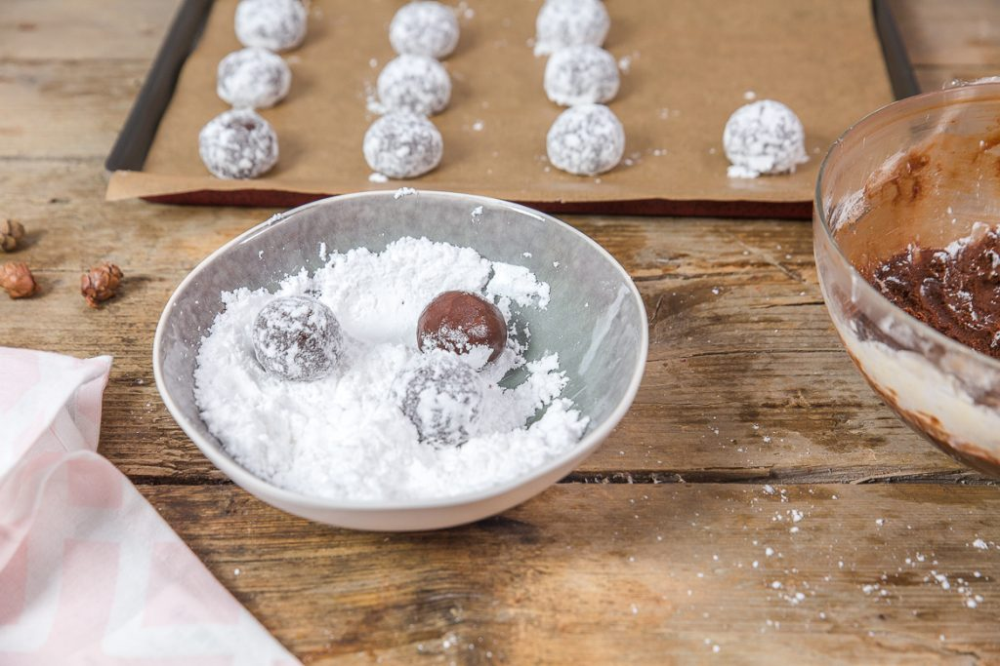
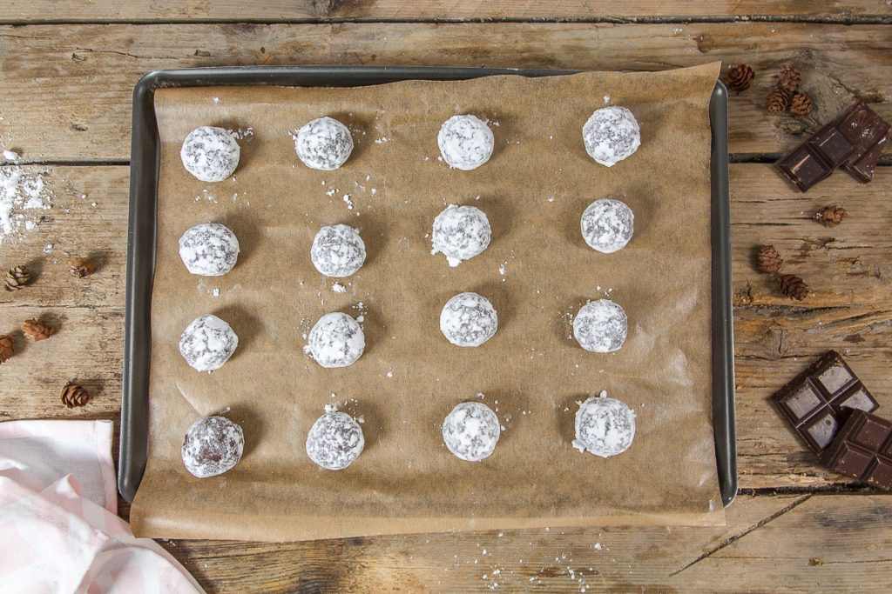

Crinkles au chocolat

Aujourd’hui je vous retrouve « enfin » avec la recette des crinkles au chocolat, petits biscuits moelleux idéals pour les fêtes de fin d’année, et pour le reste de l’année aussi!
Tout d’abord mille excuses à ceux que j’ai fait attendre depuis que j’ai posté la photo de mes crinkles mais je voulais vraiment attendre la période « d’avant fêtes » pour poster cette recette alors j’espère que vous me pardonnerez pour ce délai un peu long!! Si j’ai attendu cette période pour partager avec vous cette recette c’est parce que je trouve que ces petits biscuits au chocolat sont en accord total avec les fêtes de Noël. Ils ont un cœur tout moelleux, une croûte enneigée, une odeur ô combien réconfortante avec un goût chocolat en accord parfait avec cette période de l’année (rien que d’y penser j’ai envie de m’en refaire une fournée là tout de suite!). Si beaucoup d’entre nous (et moi la première) faisons principalement des sablés de Noël quasiment tous le mois de décembre (bon ok je parle surtout pour moi) , je me suis dit que des petits biscuits au chocolat en plus ne ferai de mal à personne (ça change et puis pas besoin d’emporte-pièce non plus^^). C’est une recette rapide, TRÈS facile à faire et terriblement gourmande. Je pense d’ailleurs que finalement je ne vous fais pas découvrir grand chose en vous parlant de crinkles au chocolat car qui ne connaît pas cette recette? On en voit absolument partout et pas que pour Noël d’ailleurs! Ma recette n’a rien d’exceptionnelle, je l’ai juste arrangée à ma sauce en essayant de ne pas avoir un rendu TROP (beaucoup trop) sucré. Si vous ne connaissez pas vous risquez d’être très surpris par la texture de ces petits biscuits au chocolat, je ne peux pas vraiment vous le décrire et puis je n’en ai pas envie non plus je préfère vous laisser la surprise ;). Je vous laisse découvrir tout ça plus bas et je vous dis à très vite pour une nouvelle recette! Bonne journée ♥
Enregistrer
Enregistrer
Ingrédients
- Chocolat noir (de préférence à 70%) - 200g
- Beurre doux ou beurre demi-sel - 50g
- Oeufs - 2
- Cassonade - 60g
- Vanille - 1 càc d'extrait de vanille ou de poudre de vanille
- Farine - 200g
- Levure chimique - 1 càc
- Sel - 1 pincée
- Sucre glace
Instructions
- Faire fondre au bain-marie le beurre et le chocolat
- Dans un saladier, fouetter les œufs avec le sucre
- Faire mousser le mélange à l'aide d'un fouet à la main
- Ajouter l'extrait de vanille et le chocolat fondu
- Mélanger à l'aide d'une maryse pour obtenir un mélange homogène
- Mélanger la farine, la levure et la pincée de sel
- Tamiser ce mélange au dessus du mélange contenant le chocolat fondu
- Mélanger rapidement de façon à obtenir un mélange homogène
- Filmer et laisser au frais 1h
- Au bout d'1 heure, sortir le saladier du frais
- Préchauffer le four à 170°
- Remplir un récipient (assiette creuse, bol...) de sucre glace
- Former des boules de pâte
- Les rouler dans le sucre glace et les déposer sur une plaque à pâtisserie recouverte de papier sulfurisé
- Enfourner les crinkles pendant 10 minutes à 170°
- Les sortir du four (les crinkles sont craquelés et paraissent mous c'est normal)
- Les laisser tiédir/refroidir
- Les crinkles doivent être légèrement croquant à l’extérieur et moelleux à l'intérieur


Les tips de la communauté
Petits gâteaux chocolatés très appréciés pour leur facilité et rapidité. Croustillants et moelleux à la fois, ils sont devenus des incontournables des fêtes. Peuvent se conserver 1-2 jours mais pas plus. Plusieurs variantes de chocolat testées avec succès.
Astuces
- Croustillant et moelleux simultanément
- Très rapide à préparer
- Peuvent se conserver 1-2 jours maximum (les faire la veille de dégustation)
- Utiliser du chocolat à 70% et du beurre doux pour un meilleur résultat
- Parfait comme accompagnement à la bûche
Variantes suggérées
- Préparer avec une pâte coulante à l'intérieur pour une portion individuelle
- Tester avec du chocolat à 70% pour plus d'intensité